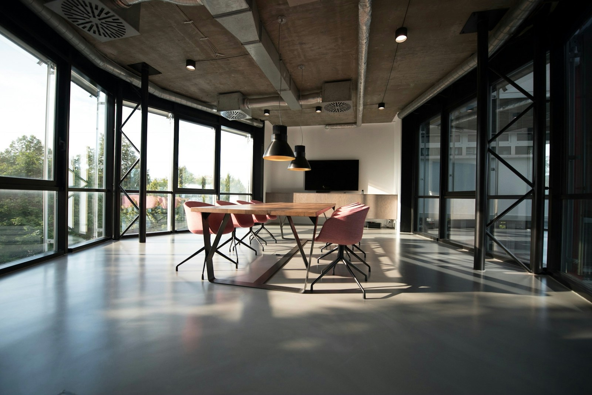

Нина Орловасегодня в 09:42 · Петроградская
Утром прошла по новой части набережной Карповки. Уже открыли спуск к воде и поставили длинные столы — хорошее место, чтобы поработать вне дома.

Утром прошла по новой части набережной Карповки. Уже открыли спуск к воде и поставили длинные столы — хорошее место, чтобы поработать вне дома.

17 августа, 12:00 · Сквер Лизы Чайкиной
Приносите черенки, семена и небольшие горшки. Подпишите сорт и условия ухода — так новым хозяевам будет проще.
Собрал спокойный вечерний круг: Ботанический сад → Каменный остров → Елагин. Получилось 18 км почти без машин. Трек оставил в комментариях.
Собрали открытую полку для обмена книгами в арке на Большой Пушкарской. Внутри уже есть современная проза, детские книги и несколько альбомов по архитектуре.
В субботу мастера бесплатно помогают с мелким ремонтом одежды, настольных ламп и бытовой техники. Запчасти лучше принести с собой, инструменты будут на месте.
Подготовили самостоятельный маршрут по шести доходным домам северного модерна. У каждой точки есть короткая справка о фасаде, архитекторе и перестройках двора.
В ленте нет записей по этому запросу.
Введите данные профиля или запросите приглашение для своего района.
Этот адрес пока не связан с участником закрытого теста. Приглашения выдаются районными модераторами по мере запуска.